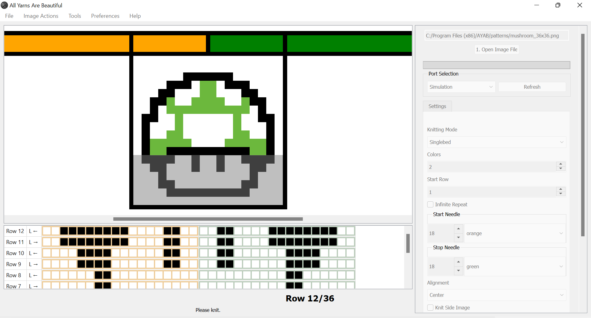

AYAB (All Yarns Are Beautiful) is an open-source software and electronics project to retrofit vintage Brother knitting machines to be controlled by computer. This enables users to design and knit garments using a low-cost home knitting machine.
AYAB distributes a desktop application that enables the user to knit a multicolor fabric design from an image. (See Figure 1.) The software governs an Arduino-based controller that interfaces with Brother 900-series electronic knitting machines. AYAB also publishes the firmware and hardware specifications for the controller. The hardware is registered with OSHWA. The source code is curated in a mature Github organisation with 10 public repositories and 12 contributing members.
The project was conceived by Christian Obersteiner and Andreas Müller in 2013 and has since gained contributors from Belgium, Germany, Poland, Sweden, the UK, and the USA. There are are active users in at least 15 countries from Europe, Asia, the Americas, and Oceania. The Facebook and Discord groups number 1,552 and 70 members respectively, and there are 402 group members on the fiber craft social media platform Ravelry.
AYAB workshops are conducted as part of the annual eTextile Spring Break, and the technology has been featured in numerous media, including MAKE Magazine and the forthcoming documentary film, The Domestic Machine.
The AYAB project has already participated successfully in GSoC 2014, 2015 and 2016 as part of the FOSSASIA organization.

Goal. Redesign the user interface and prototype a new client.
Description. Currently the AYAB desktop app, written in PyQt5, is hard to maintain across different operating systems and cannot be operated from mobile platforms. AYAB has committed to re-implementing the UI as a web application.
The initial web app prototype will be a standalone client that communicates with the AYAB interface over USB. The web app will consist of modular webcomponents that can be assembled to recreate the existing PyQT UI. When the next version of the AYAB hardware is ready, it will host the web frontend on an ESP32 microcontroller embedded in the AYAB interface itself.
The precise scope of the work will be negotiated with the student, taking into account their availability and skill set.
The goals of this project are central to the future of AYAB. The skills learned as part of this project have wide application.
Skills required. Some knowledge of Python and basic familiarity with HTML/JavaScript. Previous experience with TypeScript and web components is preferred.
Duration. 175-350 hours.
Mentors. Carson, Tom.
Goal. Design and build a website with wiki or social media features that facilitates documentation of the AYAB project by its end users.
Description. AYAB has committed to overhauling its website, Not only has the online documentation not kept pace with developments in the software, but its compliance with accessibility and W3C standards is unknown. Moreover, user-generated content is lacking. There is, for example, a good deal of relevant video in the public domain that could be incorporated into the educational materials.
Improved documentation will help existing AYAB users to make best use of the project and foster outreach to new users. Allowing users to contribute to the documentation will also provide a useful gateway to draw contributors into AYAB as an open-source ecosystem, helping to widen its outlook and ensure its future.
In its present form, the documentation can only be edited in a Github repository. This presents a high barrier to participation for many AYAB users. A website with wiki or blogging features will allow less technically-minded knitters to contribute to the ecosystem.
AYAB is a project with users all over the world, and outreach on social media has shown that efforts to accommodate non-English speakers may be particularly valuable.
Skills required. The contributor will be mentored in the use of HTML, CSS, Javascript, Git, and other tools as needed. Prior experience is not necessary.
Duration. 90-175 hours.
Mentor. Tom.
Goal. Reconfigure the internal representation of the AYAB software to allow different stitch types, and change the graphical output to show stitch symbols in the pattern image.
Description. AYAB currently implements various different methods for colorwork knitting, but does not allow variations in texture.
Allowing different kinds of stitch – first and foremost Purl stitches, but possibly also increases, decreases, and cables – would increase the range of designs that can be created and enable AYAB users to make better use of the capabilities of their knitting machines.
A stretch goal is to extend the functionality of the UI to include stitch-by-stitch editing of the pattern, a feature that has frequently been requested by users.
This is an opportunity for a creative contributor to expand the project in new directions.
Skills required. Python or Javascript are preferred.
Duration. 175 hours.
Mentor. Tom.
The student and mentor will communicate frequently to develop the project in an efficient manner and maintain a structured software development approach. Specifically:
The student will send an email or chat message each morning answering the following three questions: 1) What did you plan to do yesterday? What was the outcome? 2) What are you planning to do today? 3) Is there anything that might prevent you from achieving this goal? How can others help you?
The code will be maintained in a Github repository. Short term goals will be tracked using Github issues. The GSoC student will be expected to contribute regular updates during the day.
The student will schedule weekly Zoom meetings with their mentor. They may also communicate ad hoc. The mentor will email the organisational admin on a weekly basis to summarize recent developments.
Following the principles of Test-Driven Development, after each iteration the student will submit the following artifacts to the repository: (a) source code, (b) unit tests, (c) code documentation. The final submission will require installation instructions in Markdown or HTML.
The developer can make use of software components as necessary for the project, provided that they are licensed under an Open Source license and can be obtained and redistributed freely.
The mentor will conduct an interim evaluation in the first week of July. Final evaluations will take place in the week of August 19-26. The organisational administrator is responsible for submitting the evaluations.
Organisational admin: Chris
A professional software engineer and project manager, Chris co-founded the AYAB project in 2013 and has been an active participant ever since. He has contributed to previous rounds of GSoC as a member of the open-source FOSSASIA organization.
Mentor: Tom
Dr Thomas Price has been contributing to AYAB since 2021. He has been coding professionally since 2002, and has mentored junior colleagues throughout his career.
Mentor: Carson
Carson Holgate is a full stack generalist, mother of robots, Xoogler, and former eng manager who lead two major web frontend migrations and maintains a React based machine knitting pattern generator website. She has been contributing to AYAB and documenting the journey on YouTube for a few years.
Email Chris at info@ayab-knitting.com.